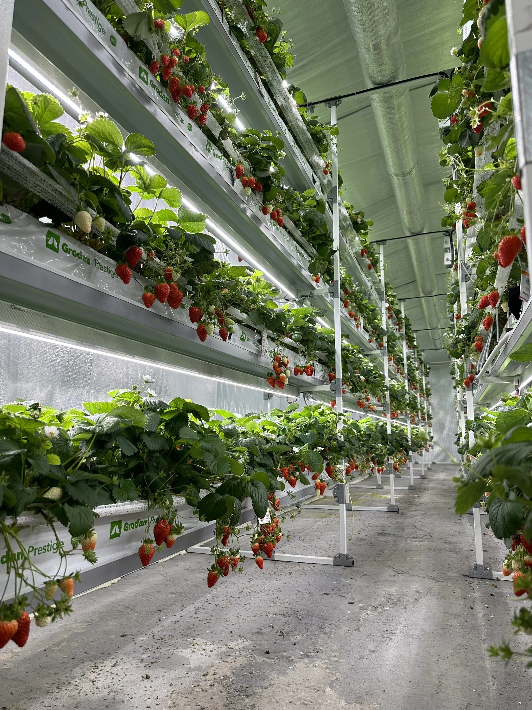

Эта карточка показывает рамку узла, а не заменяет разбор всей схемы полива.
Если модуль и линия уже понятны, отсюда легко перейти к составу. Если нет, лучше сначала собрать вводные по объекту.


Современная схема полива для многоярусной фермы на 96 растений. Здесь важны не только комплектующие, но и равномерная подача воды на все ярусы, длина линии, тип капельницы и дозирование.

Комплект помогает, когда ферма уже описана по рядам, длине линии и типу лотка. Тогда карточка становится точкой сборки узла, а не гаданием.
Когда вместе меняются расход, дозирование, режим полива и логика растения, это уже разговор не о комплекте, а о системе.